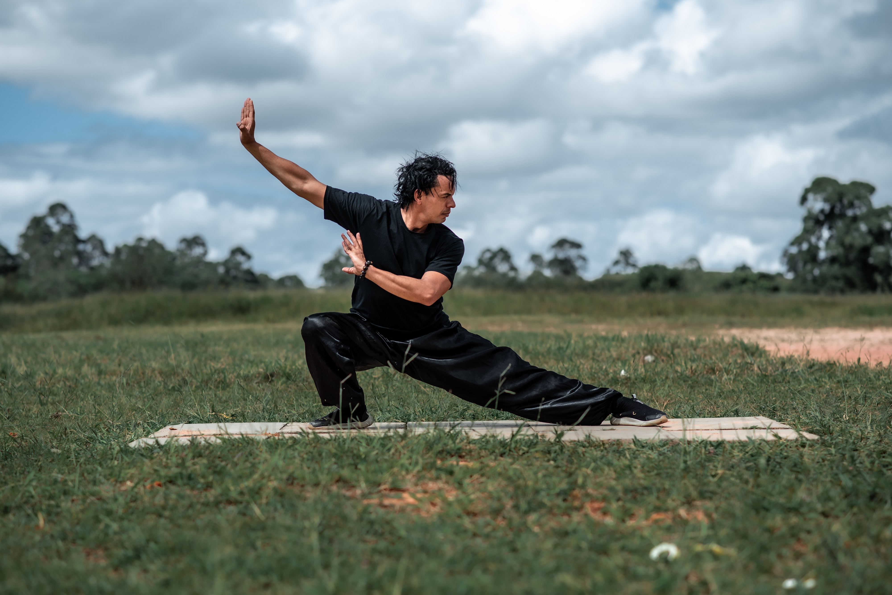

Cycling
Bicycling is also a form of aerobic exercise, says the HHS, one that makes your heart stronger and your lungs function better, and is a calorie burner to boot. Just riding a few times per week as a casual mode of transportation was found to reduce the risk of obesity, high blood pressure, and triglyceride levels.
Walking / Jogging
If you don’t have an exercise routine in place, start with walking. “Walking is easy for people to do,” Colberg says, “All you need is a good pair of shoes and somewhere to go. Walking is probably one of the most prescribed activities for people with type 2 diabetes.” Brisk walking done at a pace that raises the heart rate is considered a moderate-intensity exercise, according to the Harvard T.H. Chan School of Public Health. Walking at a quicker clip 30 minutes per day five days per week will help you reach the recommended goal of 150 minutes of moderate-intensity exercise.
Yoga
yoga can help reduce stress and manage the condition, When stress levels go higher, so do your blood sugar levels, One of the advantages of yoga as an exercise is that you can do it as often as you like.
Weight
Weight training builds muscle mass, important for those with type 2 diabetes. “If you lose muscle mass, you have a lot harder time maintaining your blood sugar,” she says.
Plan for resistance exercise or weight training at least twice a week as part of your diabetes management plan, recommends the HHS.
Tai Chi

Tai chi is an ancient Chinese tradition; participants flow through a series of movements performed in a slow and relaxed manner along with deep breathing, according to the Mayo Clinic. A meta-analysis of 14 studies, published in July 2018 in the Journal of Diabetes Research, concluded that tai chi is an effective way for people with type 2 diabetes to manage their blood glucose and A1C levels. Tai chi is ideal for people with diabetes because it provides fitness and stress reduction in one.
Swimming
Swimming is another aerobic exercise — and an ideal one for people with type 2 diabetes because it doesn’t put pressure on your joints. “Being buoyed by the water is less stressful on your body compared to walking or jogging,” Colberg says. Type 2 diabetes can lead to foot complications, including neuropathy, says the American Diabetes Association. Because neuropathy can lead to loss of feeling in the foot, you can purchase water shoes to protect your feet in the pool.